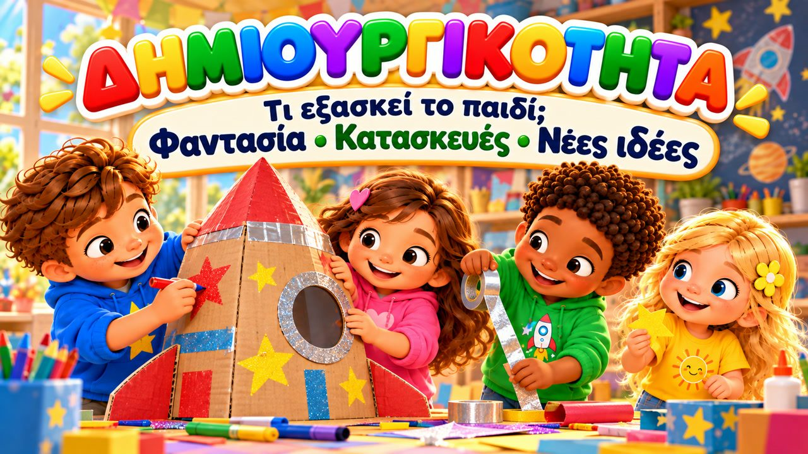
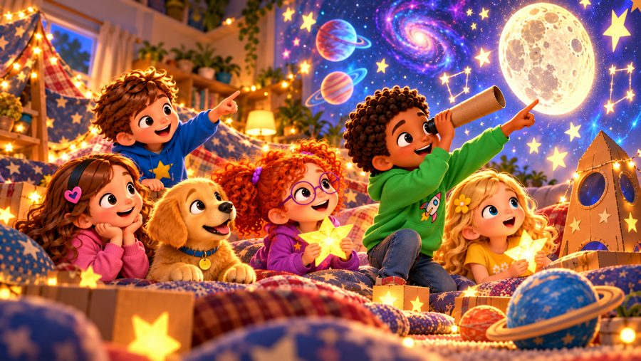
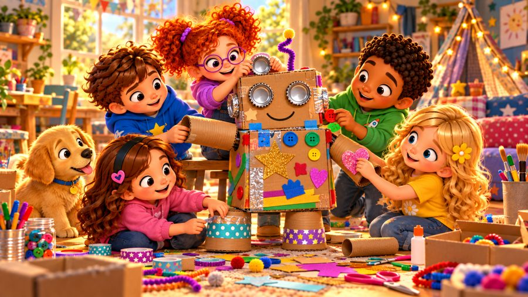

Φαντάσου Τι Μπορούμε να Φτιάξουμε
Ένα απλό κουτί μπορεί να γίνει πύραυλος, κάστρο ή ρομπότ! 🚀 Τραγουδήστε με τον Μαξ, τη Μία, τον Τζέι, τη Λίλι, τη Ρόζι και τον Μπάντι και ανακαλύψτε τη χαρά της φαντασίας και της δημιουργίας.
Για παιδιά 3–8 ετών, στο σπίτι και στην τάξη. Με στίχους καραόκε στην οθόνη.

▶💡 Γιατί είναι σημαντικό: Δημιουργικότητα
Το δημιουργικό παιχνίδι δίνει στα παιδιά ευκαιρίες να εξερευνήσουν δυνατότητες, να συνδυάσουν ιδέες και να δοκιμάσουν νέους τρόπους. Προσφέρετε απλά και ασφαλή υλικά, καλέστε τα να σκεφτούν διαφορετικές ιδέες και χαρείτε τη διαδικασία μαζί, χωρίς να απαιτείτε ένα τέλειο αποτέλεσμα.
👨👩👧 Τι μαθαίνει το παιδί
- Να φαντάζεται νέες δυνατότητες
- Να συνδυάζει διαφορετικές ιδέες
- Να δοκιμάζει, να κατασκευάζει και να μαθαίνει παίζοντας
- Να δημιουργεί μαζί με άλλους
💬 Κουβέντα μετά το τραγούδι
- Τι μπορούμε να φτιάξουμε με ένα κουτί και έναν σωλήνα;
- Μπορούμε να ενώσουμε δύο διαφορετικές ιδέες;
🏅 Κουίζ & Πτυχίο
Είδατε το τραγούδι μαζί; Τώρα διαβάστε στο παιδί κάθε ερώτηση — το παιδί δείχνει τη σωστή εικόνα. Αν απαντήσει και στις 6 ερωτήσεις, κερδίζει ένα πτυχίο για εκτύπωση!
🔒 Το όνομα χρησιμοποιείται μόνο για να φτιαχτεί το πτυχίο στη συσκευή σας. Δεν αποθηκεύουμε και δεν στέλνουμε τίποτα.
Τα κατάφερες! 🎉
Και οι 6 απαντήσεις είναι σωστές! Γράψτε το όνομα του παιδιού για να φτιαχτεί το πτυχίο.
🖨️ Δωρεάν εκτυπώσιμα
Δωρεάν για χρήση στο σπίτι και στην τάξη. Εκτυπώστε σε χαρτί Α4.
🖼️ Σκηνές από το τραγούδι






🎵 Κι άλλα τραγούδια


🎤 Στίχοι – Φαντάσου Τι Μπορούμε να Φτιάξουμε
Κοίτα!
Ένα κουτί...
Μα μόνο κουτί;
Για σκέψου λιγάκι...
Τι μπορεί να γίνει;
Πύραυλος;
Κάστρο;
Ρομπότ;
Φαντάσου!
Ο Μαξ βρήκε ένα κουτί
στη μέση στο χαλί.
«Μόνο ένα άδειο κουτί;
Για κοίτα πιο πολύ!»
Μπήκε μέσα γελαστός,
μέτρησε δυνατά:
«Τρία... δύο... ένα...
ΦΥΓΑΜΕ ΨΗΛΑ!»
Το κουτί έγινε πύραυλος,
πέταξε μακριά,
ανάμεσα σε πλανήτες,
σε αστέρια φωτεινά.
Ο Τζέι βρήκε έναν σωλήνα:
«Τηλεσκόπιο θα γίνει!»
Και κοίταζαν το διάστημα
από τη Σελήνη!
Ένα κουτί,
ένας σωλήνας...
τίποτα σπουδαίο;
Με λίγη φαντασία όμως...
γίνεται κάτι νέο!
Φαντάσου τι μπορούμε
να φτιάξουμε μαζί!
Μια μικρή ιδέα
μπορεί να γίνει αρχή!
Χτίσε!
Ζωγράφισε!
Άλλαξέ το ξανά!
Κάνε κάτι απλό
να μοιάζει μαγικά!
Δοκίμασε αλλιώς!
Βρες άλλη διαδρομή!
Κάθε νέα σκέψη
φέρνει άλλη μια ιδέα στη στιγμή!
Σκέψου!
Δοκίμασε!
Άφησέ το να γεννηθεί!
Με τη φαντασία μας...
τι θα μπορούσε να συμβεί;
Η Ρόζι κοίταξε
το ίδιο το κουτί:
«Εγώ βλέπω ένα κάστρο
που φτάνει ως την κορυφή!»
Η Λίλι είπε:
«Πόρτα θα του βάλω!»
Η Μία:
«Κι εγώ παράθυρα θα κάνω!»
Χάρτινες σημαίες,
στέμματα ψηλά,
πύργοι και παράθυρα
με χρώματα πολλά.
Ο Τζέι είπε:
«Κι ένας δράκος
θα μπορούσε να ζει εδώ!»
Ο Μπάντι γάβγισε δυνατά:
«ΓΑΒ!»
«Να ο δράκος!»
είπαν όλοι στο λεπτό!
Μία ιδέα έγινε δύο,
δύο έγιναν τρεις.
Και πριν το καταλάβεις...
φτιάχνεις κάτι
που δεν είχες φανταστεί!
Κοίτα κάτι
κι αλλιώς αυτή τη φορά.
Ρώτα:
«Τι μπορώ να φτιάξω
με αυτά που έχω μπροστά;»
Δεν υπάρχει πάντα
μία λύση σωστή.
Φαντάσου,
δοκίμασε...
κι η ιδέα θα βρεθεί!
Φαντάσου τι μπορούμε
να φτιάξουμε μαζί!
Μια μικρή ιδέα
μπορεί να γίνει αρχή!
Χτίσε!
Ζωγράφισε!
Άλλαξέ το ξανά!
Κάνε κάτι απλό
να μοιάζει μαγικά!
Δοκίμασε αλλιώς!
Βρες άλλη διαδρομή!
Κάθε νέα σκέψη
φέρνει άλλη μια ιδέα στη στιγμή!
Σκέψου!
Δοκίμασε!
Άφησέ το να γεννηθεί!
Με τη φαντασία μας...
τι θα μπορούσε να συμβεί;
Η Μία βρήκε δυο καπάκια:
«Μάτια για ρομπότ!»
Ο Μαξ του έφτιαξε δυο χέρια,
κι ο Τζέι έναν μοχλό.
Η Ρόζι πρόσθεσε ποδαράκια,
η Λίλι κουμπιά πολλά.
«ΜΠΙΠ! ΜΠΟΠ!»
έκαναν όλοι,
και γελούσαν δυνατά!
Τότε η Λίλι σταμάτησε:
«Μια ιδέα έχω εγώ!
Γιατί πρέπει να διαλέξουμε
ένα μονάχα απ' όλα αυτά;
Ας τα ενώσουμε
και τα τρία μαζί...
ένα κάστρο με πύραυλο
που πετάει σαν πουλί!
Με ρομπότ για πλήρωμα
και δράκο αρχηγό!»
Τα παιδιά κοιτάχτηκαν...
«Τρελό!»
Και ο Μαξ φώναξε:
«Γι' αυτό είναι φοβερό!»
Βλέπεις ένα άδειο κουτί;
ΤΙ ΜΠΟΡΕΙ ΝΑ ΓΙΝΕΙ;
Έχεις μία ιδέα;
ΒΡΕΣ ΑΛΛΕΣ ΤΡΕΙΣ!
Δεν πέτυχε;
ΑΛΛΑΞΕ ΤΟ!
Θέλεις νέα ιδέα;
ΚΟΙΤΑ ΓΥΡΩ!
Μπορώ να ενώσω δύο ιδέες;
ΝΑΙ!
Μπορεί η δική μου να είναι διαφορετική;
ΦΥΣΙΚΑ!
Υπάρχει πάντα μόνο ένας τρόπος;
ΟΧΙ!
Τότε τι κάνω;
ΦΑΝΤΑΖΟΜΑΙ ΚΑΙ ΔΗΜΙΟΥΡΓΩ!
Δημιουργικότητα
δεν σημαίνει
πως υπάρχει μία τέλεια ιδέα.
Μπορεί εσύ
να σκεφτείς κάτι άλλο.
Κι εγώ
κάτι διαφορετικό.
Και η δική σου ιδέα
μπορεί να μου χαρίσει
μια καινούργια σκέψη.
Φαντάζομαι.
Δοκιμάζω.
Αλλάζω.
Ξαναδοκιμάζω.
Και καμιά φορά...
η πιο αστεία ιδέα
γίνεται η καλύτερη!
Φαντάσου τι μπορούμε
να φτιάξουμε μαζί!
Μια μικρή ιδέα
μπορεί να γίνει αρχή!
Χτίσε!
Ζωγράφισε!
Άλλαξέ το ξανά!
Κάνε έναν ολόκληρο κόσμο
με όσα έχεις μπροστά!
Ένωσε ιδέες!
Δοκίμασε κι εσύ!
Κάνε ένα κάστρο
να πετάξει σαν πουλί!
Σκέψου!
Δοκίμασε!
Άλλαξε!
Δημιούργησε!
Ό,τι έχεις στο μυαλό σου,
άφησέ το να γεννηθεί!
Άλλες ιδέες;
Μια χαρά!
Η καθεμιά
μπορεί να μας πάει μακριά!
ΦΑΝΤΑΣΟΥ!
ΦΤΙΑΞΕ!
ΔΟΚΙΜΑΣΕ!
ΠΑΙΞΕ!